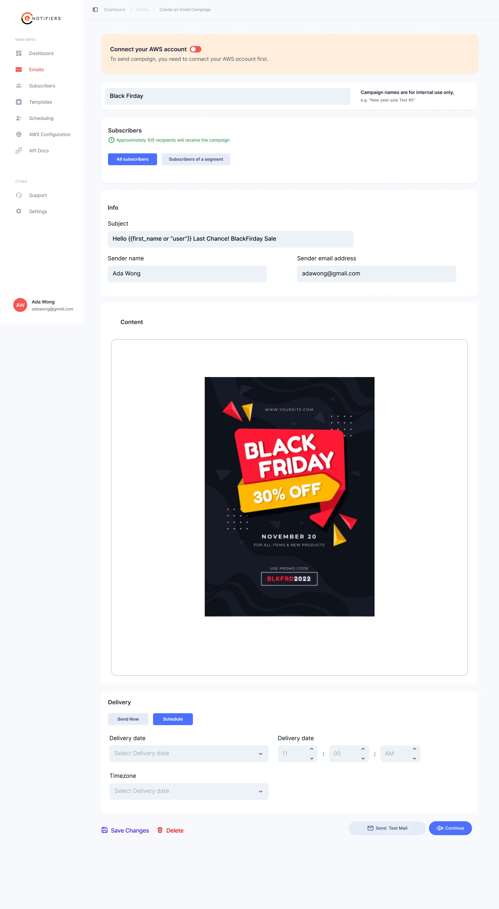
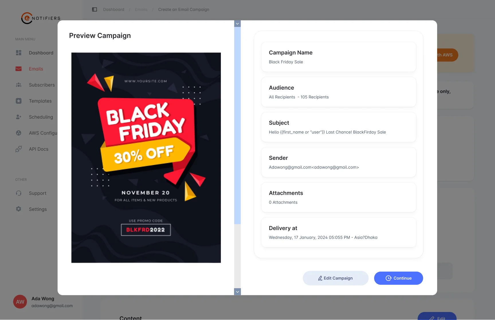
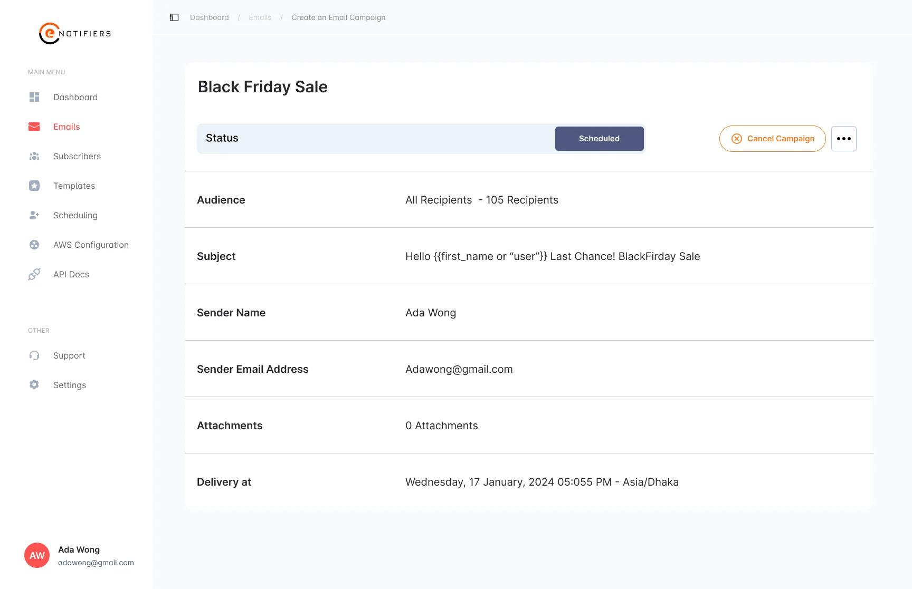
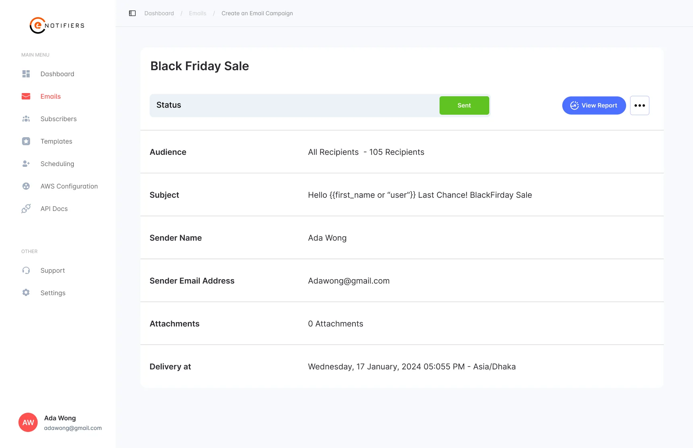
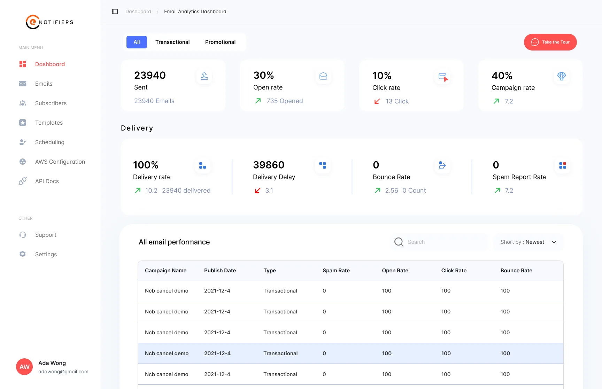
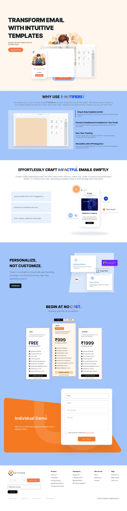

Configure in one place
Recipients, content, and delivery options are grouped by task.
Making complex email workflows feel simple — from campaign creation to delivery and performance tracking.
E-notifiers is a business communication platform for creating, scheduling, and monitoring email campaigns, with future plans for SMS and WhatsApp.
I worked with one other designer at Mindorigin Technologies to shape the product from the ground up.
Campaign creation, preview and review, scheduling, subscribers, and an analytics dashboard. The Support screen was designed for a later release.
Make it straightforward to create email campaigns without limiting users who want more control over content and delivery.
Bring several related tasks together under a tight timeline while balancing client requirements and ease of use.
Version 1 launched while I was working on the product. The client praised the clarity of the designs and the straightforward campaign steps.
Qualitative client feedback; no measured usability or performance improvements claimed.Platforms exploredMailchimp and Brevo
Key opportunitiesReduce navigation and expand template flexibility
Collaborative planning approachWhiteboard brainstorming and priorities
We explored existing campaign workflows and template experiences, then discussed how E-notifiers could keep related tasks together while giving users more creative options.
With a tight timeline, we moved directly into high-fidelity design rather than a separate low-fidelity wireframing phase.
Keep campaign setup in one continuous form, then introduce a deliberate review step.
Offer varied predefined layouts and a blank starting point. Original gallery visuals remain confidential.
Separate campaign overview, delivery health, and campaign-level results.
Allow editing before sending and show actions appropriate to campaign status.
We brought recipients, sender information, content, and delivery settings into a single creation page. Users could save drafts and return later.

Recipients, content, and delivery options are grouped by task.
Review the email creative alongside audience, subject, sender, and scheduled delivery.
A confirmation popup offered a way to go back and edit or confirm sending/scheduling.
Scheduled campaigns offered cancellation; sent campaigns linked to reports.

The two-panel review keeps the creative and the campaign settings visible together before the user proceeds.


The detail layout remains familiar, while the primary action changes with the campaign's state.
The dashboard moves from overview metrics to delivery health and individual campaign reporting. The All, Transactional, and Promotional tabs organize campaign categories.

I proposed adding Spam Report Rate beyond the client's initial dashboard metrics.
My teammate and I discussed whether a negative metric might worry business users. We decided visibility mattered: complaints could be a signal to revisit communication practices.
The lesson: Product design also means questioning what information users need—not just arranging what was requested.
Product launchedCore interfaces included in the first release.
DesignersSmall-team collaboration from the beginning.
Support was designed but remained under development for a later version.
“The designs were easy to understand, without unnecessary complexity.”
Paraphrased from recollected client feedback, not a verbatim testimonial.The client also felt the campaign steps were easier and faster. This is qualitative feedback, not a measured time reduction.
Can new users navigate the long campaign form confidently?
Can users find suitable layouts without advanced filters?
Would contextual guidance help explain Spam Report Rate?
Browse the full set of E-notifiers interface designs, from the analytics dashboard to campaign creation, review and reporting, stacked one below the other.
The marketing homepage introduces the drag-and-drop template builder, analytics, real-time tracking and API integration, and offers sign-up, a free trial and a demo booking.
Scroll inside the screen to explore the full page.

It's knowing which steps create friction and which help people make informed decisions. E-notifiers taught me to balance continuity, flexibility, and safeguards within real project constraints.
Working on a product from scratch showed me how collaborative decisions, client requirements, and delivery timelines shape the final experience. My biggest takeaway: simplicity is the result of deliberate choices.
← Explore more projectsA research-led decision-support experience that helps people choose between repairing, keeping, replacing or recycling aging devices.